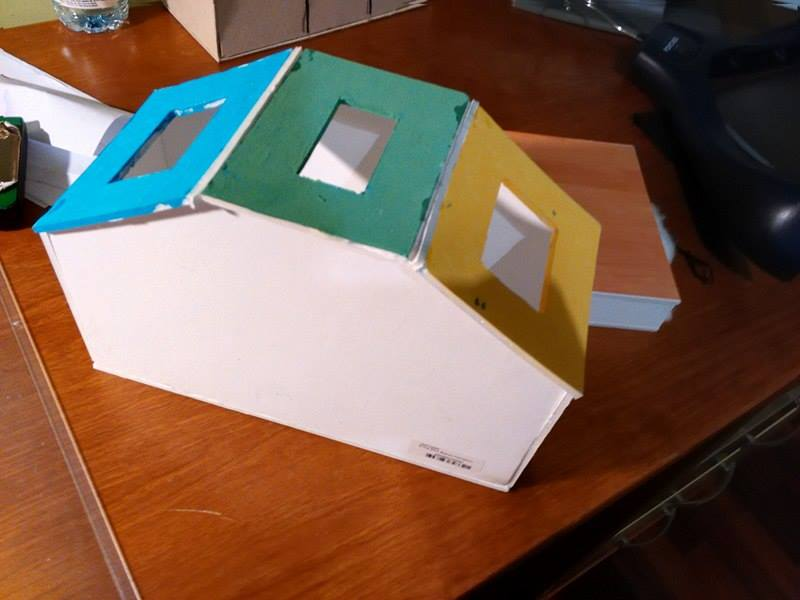
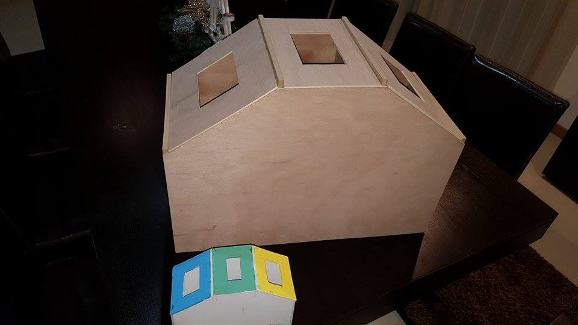
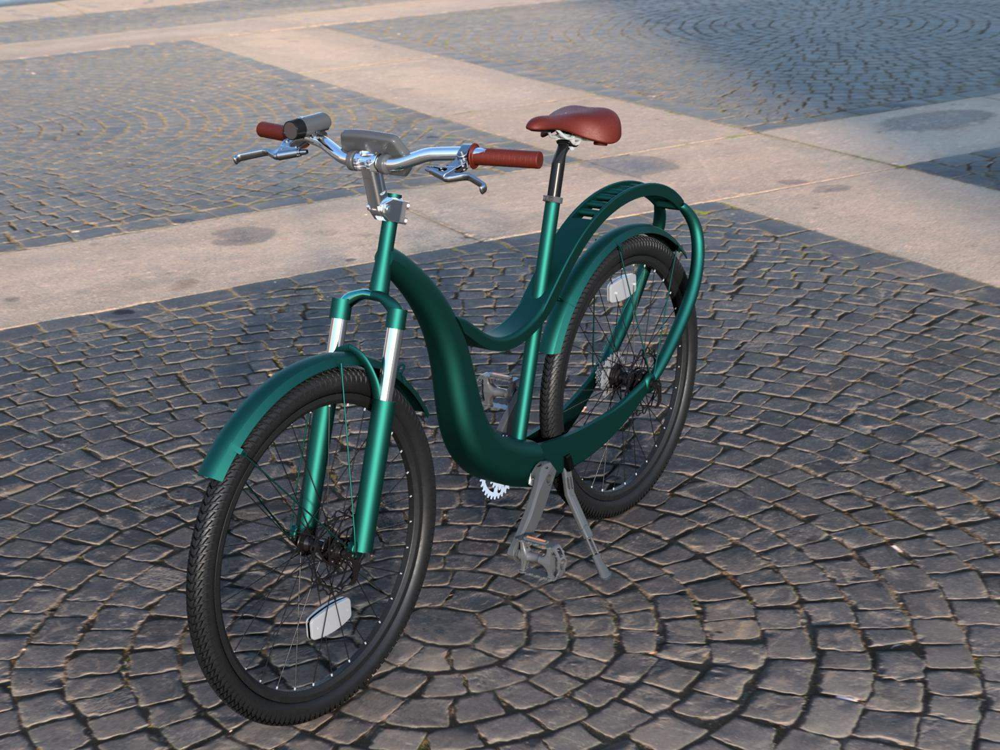
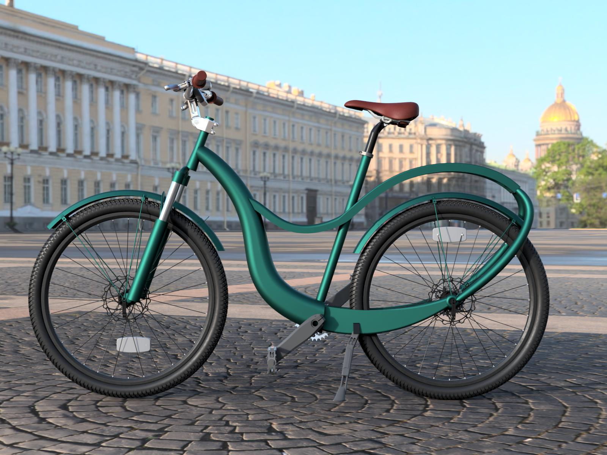

| ano | disciplina professor |
projetos |
| 2016/2017 | Introdução a Design Prof.Jéssica |
|
| 2017/2018 | Projeto em Design II Prof.Nunu Dias |
|
|
Introdução a Design/2017
Neste projecto tinhamos como objetivo criar um ecoponto, este projeto seria o nosso ponto de partida no que toca a projetos relacionados com design. Na criação deste projeto quis me focar numa construção predominantemente em contraplacado-maritimo, mostrando assim um trbalho mais profissinal e limpo, ao utilizar este material quis mostrar tambem que possuia uma técnica no que toca á construção em contraplacado. Em termos de porpocoes o meu ecoponto seria um pouco mais pequeno do que as pessoas estariam habituadas, seria um produto capaz de ser colocado em varios espaços devido á sua dimensão extremamente versátil. O publico alvo deste objecto passam então a ser as consumidor que pretendem pussuir objectos versáteis em termos de localização e espaçamento, algo que este ecoponto possui. A pintura é normal contendo as cores originais de um ecoponto, verde, amarelo e azul.
 Projeto em design II/2017
O conceito desta bicicleta baseia-se na junção do ideal de funcionalidade com uma vertente mais poética e ligada à sensibilidade do consumidor. É um produto que pertende encarnar a fluidez da água que corre pelos moinhos, a brisa que sopra quando se sobe ao alto da aldeia e principalmente a organicidade de todo o ambiente. Também foi criada para conjugar o melhor de dois mundos, a agilidade e facilidade de andar no asfalto mas também a possibilidade de virar para um caminho que entre pelo mato, com piso enlameado e irregular, e manter a mesma performance de excelência. A “Xisto” é um bicicleta que pretende interagir com a natureza respeitando o equilíbrio ecológico cada vez mais fundamental em actvidades turísticas que procuram um contacto mais próximo com o meio natural. Tentamos conjugar o ideal de comforto com o lazer, proporcionando a possibilidade de observar a paisagem envolvente graças à posição vertical que a bicicleta permite ao seu utilizador. Foi customizada ao ponto de incluir uma variadade de acessórios que a tornam num autêntico “canivete-suiço”, desde um cesto, uma luz, um suporte para cargas mais pesadas, a posibilidade de conectar a bicicleta a um atrelado e os tão essenciais pára-lamas para quando as condições atmosféricas não são ideiais. Para aumentar o conforto possuiu suspensões tanto na roda da frente como no assento reforçado e mais largo, e as mudanças conferem um passeio mais relaxante e menos cansativo. Mesmo estando recheada de elementos funcionais continua a estar centrada na segurança: o seu motor colocado no centro, na zona dos pedais, mantém o equilíbrio e evita qualquer sobrecarga que o faça falhar numa subida, por exemplo. Para finalizar, mesmo sendo uma bicicleta de curvaturas invulgares, conjuga todos os elementos de maneira a manter a resistência, como pneus mais grossos adaptados a vários terrenos, e também assegurar a durabilidade da “Xisto” com uma proteção acrescida da corrente para não haver danos numa parte tão frágil.
 